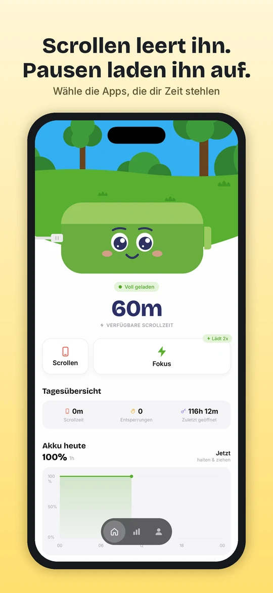
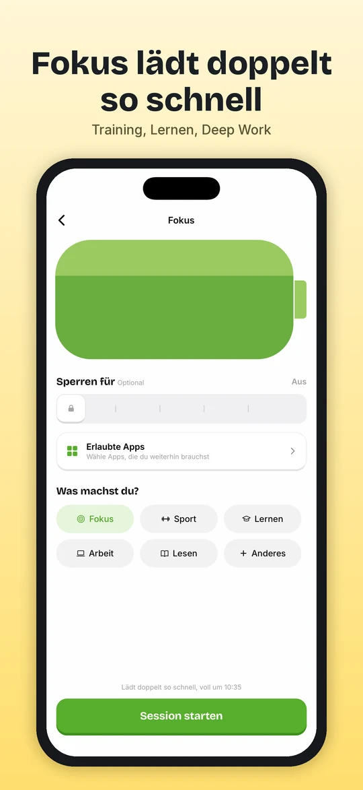

Digital Detox App fürs iPhone – ohne kalten Entzug
Digital Detox muss nicht heißen, dass das Handy ein Wochenende lang in der Schublade liegt. Der Detox, der bleibt, findet meist im Alltag statt: weniger gedankenloses Scrollen, mehr Zeit für alles andere.
Einen Detox planen, den du durchhältst
- Wähle die paar Apps, die dir am meisten Zeit rauben. Nützliche Apps bleiben unangetastet.
- Setz ein Tagesbudget statt eines Komplettverbots.
- Plane handyfreie Blöcke für Sport, Lernen oder konzentriertes Arbeiten.
- Reduziere schrittweise, jeden Tag ein paar Minuten.
- Behalte deine Woche im Blick, damit du Fortschritte siehst.
So hilft ScrollVolt
ScrollVolt deckt jeden dieser Schritte ab. Deine ausgewählten Apps teilen sich einen Scroll-Akku, der sich bei Nutzung leert und über den Tag von selbst wieder auflädt. Wie viele Minuten du freischaltest, entscheidest du, indem du am Akku ziehst; bei null ersetzt ein ruhiger Sperrbildschirm die App. Fokus-Sessions halten ablenkende Apps beim Sport oder Lernen gesperrt und laden den Akku doppelt so schnell. Die Halbe-Challenge senkt dein Tageslimit um 5, 10 oder 15 Minuten pro Tag, und der Wochentrend zeigt dir, ob es wirkt.


Und privat ist es auch: ScrollVolt basiert auf Apples Bildschirmzeit-Frameworks, alles läuft auf deinem iPhone – ohne Konto, Tracking oder Werbung.
Häufige Fragen
Was ist ein Digital Detox?
Eine bewusste Pause von Bildschirmen oder einzelnen Apps, um Gewohnheiten neu einzustellen. Das kann ein ganzer handyfreier Tag sein oder ein kleineres tägliches Limit.
Muss ich dafür mein ganzes Handy sperren?
Nein. Im Alltag begrenzt ScrollVolt nur die Apps, die du auswählst. Alles andere funktioniert wie gewohnt.
Gibt es ScrollVolt auf Deutsch?
Ja. Die App ist auf Deutsch, Englisch, Spanisch und Türkisch verfügbar.
ScrollVolt auf dem iPhone testen
ScrollVolt Premium ist ein Jahresabo mit 3 Tagen kostenloser Testphase, das du jederzeit in den Einstellungen deines Apple Accounts kündigen kannst. Lieber einmal zahlen? Dann gibt es die einmalige Lebenslang-Option.
Laden imApp Store